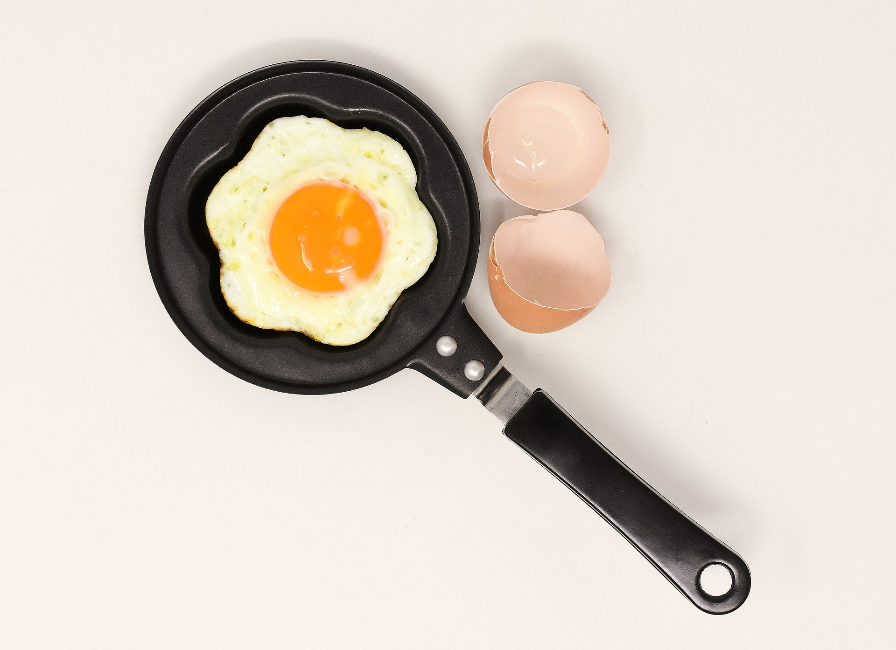

Tauche ein in die köstliche Welt der griechischen Küche mit unserem unwiderstehlichen Moussaka-Rezept! Diese herzhafte Auflaufspezialität aus aromatischem Lammhackfleisch, geschichtet mit zarten Auberginen und einer cremigen Béchamelsauce, verspricht einen kulinarischen Ausflug nach Griechenland.
Gusseisen-Pfannen und beschichtete Pfannen sind beliebte Kochutensilien, die jeweils ihre Vor- und Nachteile haben. Gusseisen bietet eine hervorragende Wärmeleitung und Langlebigkeit, erfordert jedoch mehr Pflege und ist schwerer. Beschichtete Pfannen sind leicht, einfach zu reinigen und bieten Antihaft-Eigenschaften, neigen aber zur Abnutzung der Beschichtung und sind empfindlicher gegenüber Kratzern. Die Wahl zwischen den beiden hängt von persönlichen Vorlieben, Kochgewohnheiten und Pflegebereitschaft ab. Beide haben ihre Anwendungsgebiete und können je nach Bedarf optimal sein.
